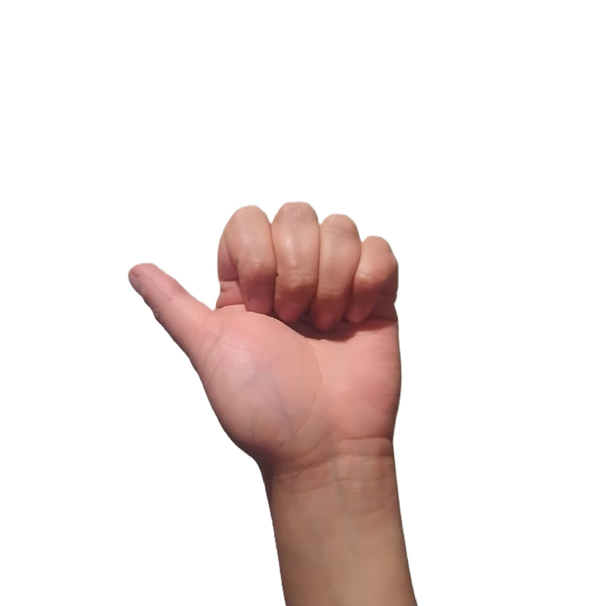
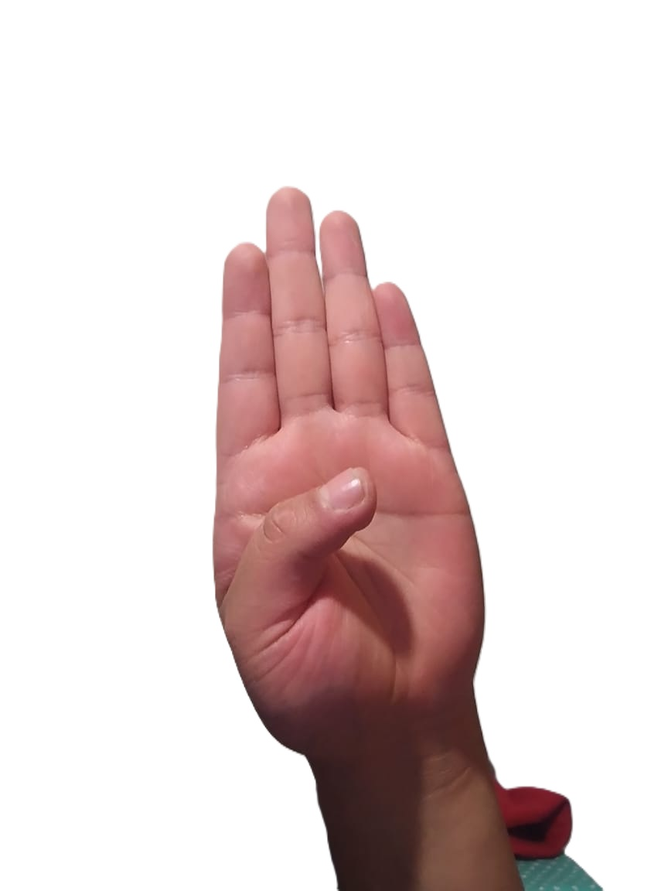

LUNES

Con la mano cerrada, se muestran las uñas y se estira el dedo pulgar hacia un lado. La palma mira al frente.
MARTES

Los dedos índice, medio, anular y meñique se estiran bien unidos y el pulgar se dobla hacia la palma, la cual mira al frente.
MIERCOLES

Los dedos índice, medio, anular y meñique se mantienen bien unidos y en posición cóncava; el pulgar también se pone en esa posición. La palma mira a un lado.
JUEVES

Los dedos medio, anular, meñique y pulgar se unen por las puntas y el dedo índice se estira. La palma mira al frente.
VIERNES

Se doblan los dedos completamente, y se muestran las uñas. La palma mira al frente.
SABADO

Con la mano abierta y los dedos bien unidos, se dobla el índice hasta que su parte lateral toque la yema del pulgar. La palma mira a un lado.
DOMINGO
Con la mano abierta y los dedos bien unidos, se dobla el índice hasta que su parte lateral toque la yema del pulgar. La palma mira a un lado.
ENERO

Se cierra la mano y los dedos índice y pulgar se estiran. La palma mira hacia usted.
FEBRERO

Con la mano cerrada y los dedos índice y medio bien estirados y unidos, se extiende el dedo pulgar señalando hacia arriba. La palma mira hacia usted.
MARZO

Con la mano cerrada, el dedo meñique se estira señalando hacia arriba. La palma se pone de lado.
ABRIL

Con la mano cerrada, el dedo meñique bien estirado señalando hacia arriba y la palma a un lado dibuja una j en el aire.
MAYO

Se cierra la mano con los dedos índice, medio y pulgar estirados. La yema del pulgar se pone entre el índice y el medio. Se mueve la muñeca hacia arriba.
JUNIO

Con la mano cerrada y los dedos índice y pulgar estirados, se forma una l. La palma mira al frente.
JULIO
Con la mano cerrada y los dedos índice y pulgar estirados, se forma una l. La palma mira al frente.
AGOSTO
Con la mano cerrada y los dedos índice y pulgar estirados, se forma una l. La palma mira al frente.
SEPTIEMBRE
Con la mano cerrada y los dedos índice y pulgar estirados, se forma una l. La palma mira al frente.
OCTUBRE
Con la mano cerrada y los dedos índice y pulgar estirados, se forma una l. La palma mira al frente.
NOVIEMBRE
Con la mano cerrada y los dedos índice y pulgar estirados, se forma una l. La palma mira al frente.
DICIEMBRE
Con la mano cerrada y los dedos índice y pulgar estirados, se forma una l. La palma mira al frente.
BUENOS DÍAS

Con la mano cerrada, se ponen los dedos índice, medio y anular sobre el pulgar.
BUENAS TARDES

Con la mano cerrada, se ponen los dedos índice y medio sobre el pulgar.
BUENAS NOCHES

Con la mano cerrada, se ponen los dedos índice y medio sobre el pulgar. Se mueve la muñeca a los lados.